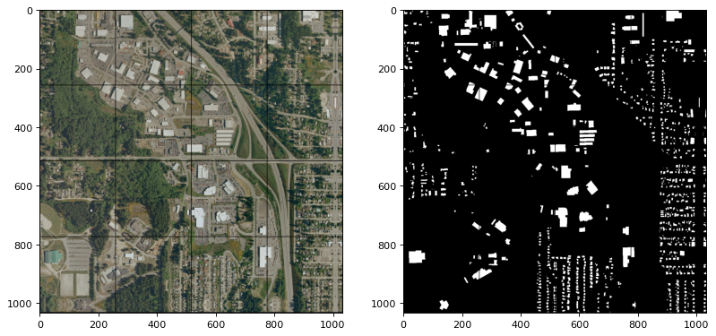

Split Raster


Quick Links
- PyPI: split-raster
- GitHub: split-raster
Introduction

Split Raster is an open-source and highly versatile Python package designed to easily break down large images into smaller, more manageable tiles. While the package is particularly useful for deep learning and computer vision tasks, it can be applied to a wide range of applications.
Initially developed by Caihao Cui to provide optimal support for deep learning and computer vision tasks, Split Raster was specifically designed for image segmentation tasks on satellite images as well as remote sensing methods. By generating tiled output image samples from an input raster dataset, Split Raster enables more efficient and effective analysis of large images. The package also includes a random sampling function that generates a fixed number of tiles for early experimentation.
For example, let's say you have a set of RGB and GT images, each with dimensions of 1000-by-1000 pixels. Utilizing Split Raster, you can easily generate 16 tiles, each with dimensions of 256x256 pixels and automatic padding on the edges. The package also allows for customization of tile size and overlap to better suit individual project needs. Furthermore, Split Raster handles the padding and naming of output images automatically, saving time and effort (e.g., 0001.png, 0002.png, ..., 9999.png).
Install the packages
pip install splitraster
Try Sample code
The sample image can be found in the GitHub repo.
from splitraster import io
input_image_path = "./data/raw/RGB.png"
gt_image_path = "./data/raw/GT.png"
save_path = "./data/processed/RGB"
save_path_gt = "./data/processed/GT"
crop_size = 256 # 256x256 pixels of the output tiles
repetition_rate = 0.0 # 0.0 means no overlap
overwrite = False # if True, overwrite the existing files in the save_path
n = io.split_image(input_image_path, save_path, crop_size,
repetition_rate=repetition_rate, overwrite=overwrite)
print(f"{n} tiles sample of {input_image_path} are added at {save_path}")
n = io.split_image(gt_image_path, save_path_gt, crop_size,
repetition_rate=repetition_rate, overwrite=overwrite)
print(f"{n} tiles sample of {gt_image_path} are added at {save_path_gt}")
Possible results. Note that if you did not set the overwrite parameter to True, the existing files will not be overwritten. The name of the new files will start with the next number of the existing files.
Input Image File Shape (H, W, D):(1000, 1000, 3)
crop_size = 256, stride = 256
Padding Image File Shape (H, W, D):(1024, 1024, 3)
Generating: 100%|██████████| 16/16 [00:00<00:00, 27.63img/s]
16 tiles sample of ../data/raw/RGB.png are added at ../data/processed/RGB
Input Image File Shape (H, W, D):(1000, 1000)
crop_size = 256, stride = 256
Padding Image File Shape (H, W, D):(1024, 1024)
Generating: 100%|██████████| 16/16 [00:00<00:00, 48.39img/s]16 tiles sample of ../data/raw/GT.png are added at ../data/processed/GT
Random Sampling Code
The basic implementation is still the same as the above. Just replace the 'split_image' method to 'rand_crop_image'.
from splitraster import io
input_image_path = "./data/raw/RGB.png"
gt_image_path = "./data/raw/GT.png"
input_save_path = "./data/processed/Rand/RGB"
gt_save_path = "./data/processed/Rand/GT"
n = io.random_crop_image(input_image_path, input_save_path, gt_image_path, gt_save_path, crop_size=256, crop_number=20, img_ext='.png', label_ext='.png', overwrite=True)
print(f"{n} sample paris of {input_image_path, gt_image_path} are added at {input_save_path, gt_save_path}.")
Results:
Generating: 100%|██████████| 20/20 [00:01<00:00, 19.27img/s]20 sample paris of ('../data/raw/RGB.png', '../data/raw/GT.png') are added at ('../data/processed/Rand/RGB', '../data/processed/Rand/GT').
Update Log
- 2023-Mar-19 Update github actions and add tutorial for the package.
- 2022-Dec-16 Upgrade the package to support python 3.8, 3.9, 3.10, 3.11 (https://pypi.org/project/splitraster/0.3.3).
- 2022-Jan-16 Fix bugs to make package suitable for python 3.7. Publish new version at(https://pypi.org/project/splitraster/0.3.2/) .
Contribution Guidelines
If you run into issues or have questions, please open an issue or submit a pull request.
If you are interested in contributing to splitraster, please see our contributing guidelines.